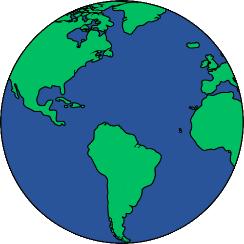

.png)
Recentemente, criei um novo mapa no Modo Single-Player do jogo Minecraft. No começo, tudo estava normal, enquanto eu cortava as árvores e criava uma pequena bancada. Mas notei algo se mover entre a densa neblina (tenho um computador muito lento, por isso tenho que jogar com uma renderização minúscula). A principio achei que era uma vaca, por isso fui atrás dela, na esperança de conseguir algumas peles para minha armadura.
Entretanto, não era uma vaca. Olhando em minha direção estava um outro personagem, com a cor de pele padrão, mas seus olhos estavam vazios. Não vi nenhum nome aparecer, e eu verifiquei umas duas vezes para me certificar de que não estava no modo Multiplayer. Ele não ficou muito tempo; simplesmente olhou para mim e rapidamente correu pra dentro da neblina. Corri atrás dele por curiosidade, mas ele foi embora.
Eu continuei com o jogo, não sabendo o que pensar. Enquanto expandia o mundo, via coisas que pareciam fora do lugar para o gerador de mapas aleatórios; Tuneis 2x2 no meio de rochas, pequenas e perfeitas pirâmides de areia no oceano, e os bosques de árvores com todas as suas folhas cortadas. Constantemente, sempre achava que havia visto o outro "player" outro no meio do nevoeiro profundo, mas eu nunca consegui ter uma visão melhor dele. Tentei aproximar ainda mais minha câmera sempre que pensava ter o visto, mas não adiantava.
Salvei o mapa e fui pros fóruns da Internet, pra ver se alguém havia encontrado o pseudo-jogador. Não havia ninguém que tivesse o visto. Eu criei meu próprio tópico falando sobre o homem e perguntando se alguém teve alguma experiência semelhante. O tópico foi deletado dentro de cinco minutos. Tentei mais uma vez, e o tópico foi eliminado ainda mais rápido. Em seguida, recebi uma mensagem pessoal de um usuário chamado 'Herobrine', dizendo apenas uma palavra: “Pare”. Quando fui olhar o perfil de Herobrine, deu erro na página.
Recebi um email de outro usuário do fórum. Ele afirmou que os ‘mods’ podiam ler as mensagens dos usuários do fórum, e que era mais seguro se comunicar por e-mail. A pessoa que me mandou o email alegou que ele também tinha visto o jogador mistério, e tinha um pequeno 'fórum' de outros usuários que também tinham o visto. Seus mundos estavam obviamente recobertos de características estranhas também, e eles diziam que o jogador misterioso não tinha pupilas.
Cerca de um mês se passou até que eu recebi noticias de meu informante novamente. Algumas das pessoas que haviam encontrado o homem misterioso procuraram o nome Herobrine, e descobriram que aquele nome era freqüentemente utilizado por um jogador da Suécia. Depois de recolher mais algumas informações adicionais, foi revelado que o jogardor era o irmão de Notch, o desenvolvedor do jogo. Eu, pessoalmente, enviei uma mensagem à Notch, e perguntei se ele tinha um irmão. Demorou um tempo, mas ele me mandou de volta uma mensagem muito curta:
“Eu tinha, mas ele não está mais entre nós.
-Notch."
Eu não vi o homem mistério desde nosso primeiro encontro, e eu não notei qualquer outra alteração em meus outros mapas. Felizmente, consegui tirar um 'print screen' quando o vi pela primeira vez. Aqui está a única evidência de sua existência: